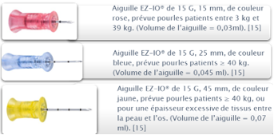
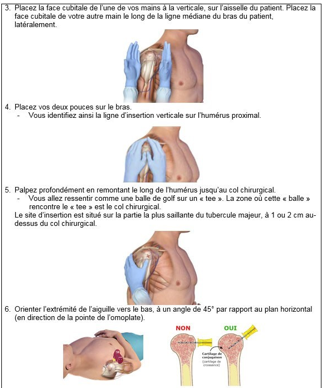

Cathétérisme intra-osseux
Définition
Le cathéter intra-osseux est un accès vasculaire périphérique d'urgence, utilisé lors d'un arrêt cardio-respiratoire ou d'un état de choc mettant en danger le pronostic vital. Il permet l'administration de médicaments ou de perfusions, ainsi que le prélèvement de sang pour des examens.
La voie IO est rapide, sûre et associée à moins de complications qu’un cathéter veineux central.
La liste suivante indique le site et les vaisseaux drainants pour les sites les plus couramment utilisés :
• Tibia proximal-Veine poplitée
• Fémur - Branches de la veine fémorale
• Tibia distal (malléole interne) -Veine saphène interne
• Humérus proximal - Veine axillaire
• Manubrium (partie supérieure du sternum) : veines mammaires internes et azygos.
Le sang s'écoule des sinusoïdes situées dans la cavité médullaire vers le canal veineux central, puis dans les vaisseaux principaux via les veines corticales.
Dispositifs intra-osseux
Différents types de cathéters intra osseux existent : manuels, à ressort et motorisés.
Le modèle disponible et validé au niveau du CHU Mohammed 6 de Marrakech est le système EZ-IO
Ce sont des aiguilles à entrainement motorisé avec une perceuse. Le système EZ-IO® peut s’utiliser sur des patients dès 3 kg (nouveau-né), mais il est recommandé de l’utiliser à partir de 10 kg (1an).
Trois aiguilles EZ-IO® sont disponibles. Le choix de l’aiguille dépendra des indications fournies sur l’emballage et du site de ponction

Le choix de l’aiguille EZ-IO® dépendra aussi de l’épaisseur des tissus entre la peau et l’os. Un repère noir représentant 5 mm doit être visible avant l’insertion de l’aiguille dans l’os.
Indications et contre-indications
1. Indications :
1. En cas de menace vitale immédiate, il est crucial d'obtenir un accès vasculaire rapidement, avant même d'envisager la pose d'une voie veineuse périphérique, afin de ne pas retarder l'administration des traitements selon les protocoles de l'Advanced Trauma Life Support.
2. Lorsque deux voies veineuses périphériques ont échoué, l'arrêt cardio-circulatoire représente une indication majeure pour le cathétérisme intra-osseux.
3. Autres situations d'urgence :
En plus des situations mentionnées ci-dessus, le cathétérisme intra-osseux peut être nécessaire dans d'autres contextes, notamment en préhospitalier ou en salle de déchoquage, pour traiter des états de choc graves tels que l'hypovolémie, l'hémorragie ou l'état septique.
2. Contre-indications :
1. Présence d'une atteinte vasculaire, cutanée (telle qu'une brûlure ou une infection) ou osseuse du membre, comme dans les cas d'ostéoporose ou d'ostéogénèse imparfaite.
2. Fracture de l'os concerné.
3. Os ayant déjà subi une perforation, ce qui augmente le risque d'extravasation due à une perforation antérieure.
Complications
• Fracture de l'os perforé
• Transfixion de l'os
• Atteinte du cartilage de croissance
• Extravasation autour du point d'insertion
• Infiltration sous périostée ou sous-cutanée
• Lésion épiphysaire
• Syndrome des loges : ischémie musculaire causée par une augmentation anormale de la pression dans une loge musculaire.
• Infections : périostite, cellulite, abcès sous-cutané, ostéomyélite
• Embolie graisseuse (risque accru après l'âge de 6 ans)
• Obstruction de l'aiguille par la moelle osseuse, un fragment osseux ou un tissu.
• Douleur, particulièrement si le patient est conscient et sans anesthésie locale.
Site de ponction
Différents sites de ponction sont disponibles en fonction de l'âge du patient et du type de matériel utilisé :
• Pour les enfants, les sites privilégiés, dans l'ordre, sont : le tibia proximal, le tibia distal, le fémur distal, la tête de l'humérus (pour les enfants de plus de 5 ans), et rarement l'épine iliaque supérieure antérieure.
• Chez les adultes, les sites de prédilection sont, par ordre de priorité : le tibia proximal, la tête de l'humérus, le tibia distal.
• Certains sites ne peuvent être utilisés qu'avec un type spécifique de matériel : la tête humérale est exclusivement réservée au système EZ-IO, tandis que la crête iliaque est utilisable uniquement avec le système Cook.

Matériel nécessaire
• Champs stériles
• Antiseptique en solution moussante, Antiseptique en solution alcoolique de la même famille
• Compresses stériles
• Produit hydroalcoolique
• Aiguilles EZ-IO adaptées +perceuse
• Raccord EZ-connect
• Fixateur EZ-stabilizer
• 2 seringues de 10ml
• NaCl 0,9%
• Billot réalisé avec linge roulé ou coussin de sable (tibial proximal)
• Conteneur à OPCT, sacs à ordures ménagères et sacs à DASRI
• Pour la gestion de la douleur pour patient conscient :
• Lidocaïne 1 ou 2% pour injection sous cutanée
• Seringue de 2 ml
• Pour enlever la douleur liée à l’injection intra osseuse :
• Lidocaïne 1 ou 2% pour injection IO
• Seringue de 2ml
• NaCl 0,9%
• Seringue pour flush de NaCl 0,9%
• Pour habillage de l’opérateur et l’aide :
• OPERATEUR : charlotte, masque chirurgical, casaque stérile, gants stériles
• AIDE : charlotte, masque chirurgical
Déroulement du geste
1. Réaliser une friction avec le PHA
2. Réaliser l’antisepsie cutanée en 4 temps :
• Détersion avec un antiseptique en solution moussante
• Rinçage
• Séchage avec compresses stériles
• Antisepsie avec un antiseptique de même famille
• Attendre le séchage complet spontané (ne pas essuyer)
• 2ème antisepsie avec un antiseptique de même famille
• Attendre le séchage complet spontané (ne pas essuyer)
3. Préparer le matériel pour la pose de voie intra-osseuse
4. Réaliser une friction chirurgicale avec le PHA
5. S’habiller de façon aseptique
6. Installer les champs stériles de façon à protéger la zone de ponction
7. Faire une deuxième application d’antiseptique, attendre le séchage complet
8. Si le patient est conscient et que la situation le permet, on peut réaliser une anesthésie locale (lidocaïne sous cutanée)
9. Réaliser la pose du cathéter intra osseux, fixer le cathéter (selon les préconisations du fabriquant) :
Etape 1 : Enfoncez doucement l’aiguille dans la peau jusqu’à ce que l’extrémité touche l’os. Le repère noir à 5 mm sur l’aiguille doit être visible au-dessus de la peau avant l’insertion. Appuyez sur le bouton de la perceuse, appliquez une pression légère constante, arrêtez lorsqu’une perte de résistance est ressentie et éventuellement un « poc » est entendu.
Etape 2 : Stabilisez l’embase, puis retirez le dispositif d’insertion et le mandrin. Placez le mandrin dans un conteneur approprié pour objets tranchants.
Etape 3 : Placez le dispositif de fixation EZ-Stabilizer sur l’embase du cathéter.
Etape 4 : Fixez fermement le prolongateur purgé sur l’embase du cathéter en laissant le clamp ouvert.
Etape 5 : Retirez l’adhésif à l’arrière du dispositif de fixation EZ-Stabilizer et placez-le sur la peau.
Etape 6 : Confirmez le bon positionnement. Rincez le cathéter EZ-IO avec du NaCl 0,9% (5-10 ml pour les adultes ; 2-5 ml pour les enfants). Avant le rinçage, envisagez l’utilisation en IO d’une solution de lidocaïne à 2 %
Etape 7 : Administrez les solutés et médicaments conformément aux indications (même dose, vitesse, concentration que la VVP).
10. Eliminer le reste des déchets selon le protocole en vigueur dans l’établissement
11. Réaliser une friction avec le PHA
Manipulation et surveillance
1. Manipulation
- L’administration de volumes de remplissage rapide doit être réalisée à la seringue (patient < 10 kg) ou à la manchette à pression (patient > 10 kg).
- L’administration de solutés en débit libre est contre-indiquée et risque de ne pas pouvoir fonctionner à cause des résistances osseuses.
- Toujours rincer le cathéter et le raccord avec du NaCl 0,9% entre deux médicaments ou solutés de différentes natures.
- Afin d’éviter le risque de nécrose médullaire, toujours rincer le cathéter avec du NaCl 0,9% après l’administration de produits hypertoniques (ex : Glucose dès concentration à 10%, Mannitol®) ou produits alcalins (ex : NaBic 4,2 % ou 8,4%) car risque de nécrose médullaire
2. Surveillance :
- Coloration du membre.
- Pouls distal du membre.
- Apparition d’un œdème sous-cutané ou de la musculature.
- Position de l’aiguille (doit tenir seule).
- Perméabilité de la voie.
- Site de ponction.
Retrait du cathéter
Le cathéter intra osseux doit être retiré :
- Dès que le patient est stabilisé,
- Dès l’obtention d’un autre accès vasculaire
- Après un délai maximal de 24 heures.